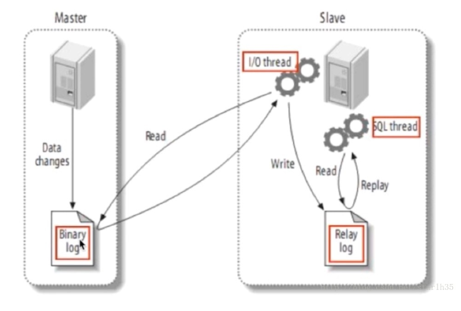

MySQL的工作模式
最简单的mysql模式：
APP -> DAL -> MYSQL INSTANCE
问题：
- 数据的总量大
- 索引大
- 读写混合，一个实例没法承受
引入缓存技术
改进模式后：缓存 + MySQL + 垂直拆分
APP -> DAL -> CACHE -> 多个mysql instance
引入主从模式
改进模式后：读写分离，主从复制
写的操作放在主库，读的操作放在从库，避免服务器出现性能瓶颈。

主服务器master记录数据库操作日志到Binary log，从服务器开启i/o线程将二进制日志记录的操作同步到relay log（存在从服务器的缓存中），另外sql线程将relay log日志记录的操作在从服务器执行。
整个复制过程实际上就是 Slave 从 Master 端获取该日志然后再在自己身上完全顺序的执行日志中所记录的各种操作。
MySQL 复制的基本过程如下：
1. Slave 上面的IO线程连接上 Master，并请求从指定日志文件的指定位置(或者从最开始的日志)之后的日志内容;
2. Master 接收到来自 Slave 的 IO 线程的请求后，通过负责复制的 IO 线程根据请求信息读取指定日志指定位置之后的日志信息，返回给 Slave 端的 IO 线程。返回信息中除了日志所包含的信息之外，还包括本次返回的信息在 Master 端的 Binary Log 文件的名称以及在 Binary Log 中的位置;
优点：
- 主服务器进行写操作时，不影响查询应用服务器的查询性能，降低阻塞，提高并发；
- 数据拥有多个容灾副本，提高数据安全性
存在的问题：
- 主从间的数据库不是实时同步，就算网络连接正常，也存在瞬间，主从数据不一致。
- 如果主从的网络断开，从会在网络正常后，批量同步。
- 如果对从进行修改数据，那么很可能从在执行主的bin-log时出现错误而停止同步，这个是很危险的操作。所以一般情况下，非常小心的修改从上的数据。
- 一个衍生的配置是双主，互为主从配置，只要双方的修改不冲突，可以工作良好。
- 如果需要多主的话，可以用环形配置，这样任意一个节点的修改都可以同步到所有节点。
引入分库分表技术：
改进后模式：分表分库 + 水平拆分 + MySQL集群
分表分库：
分表是将一个大表按照一定的规则分解成多张具有独立存储空间的实体表，我们可以称为子表，每个表都对应三个文件，MYD数据文件，.MYI索引文件，.frm表结构文件。
这些子表可以分布在同一或不同数据库，同一磁盘，或者不同的机器上。读写的时候根据事先定义好的规则得到对应的子表名，然后去操作它。
水平拆分（分区）：
将大表分解为若干个独立的实体表，而分区是将数据分段划分在多个位置存放，可是是同一数据库或不同图书角，同一块磁盘或不同的机器。
分区后，表面上还是一张表，但数据散列到多个位置了。读写的时候操作的还是大表名字，db自动去组织分区的数据。